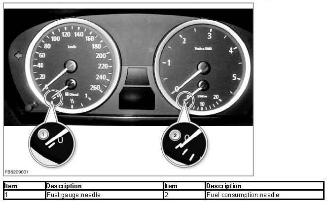
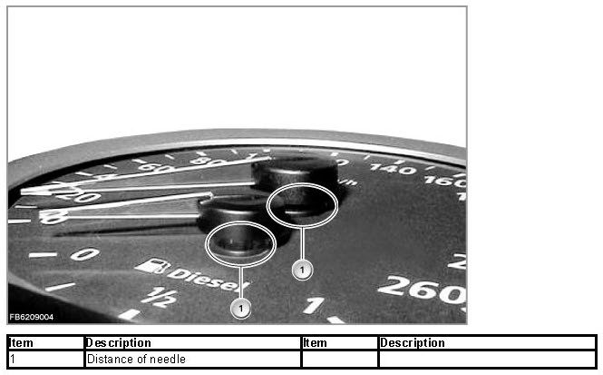
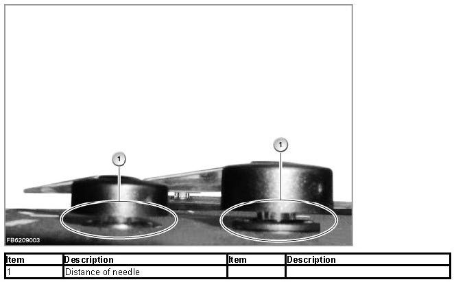
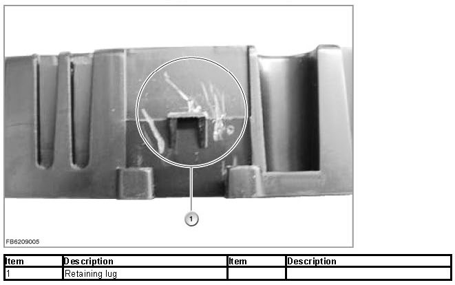
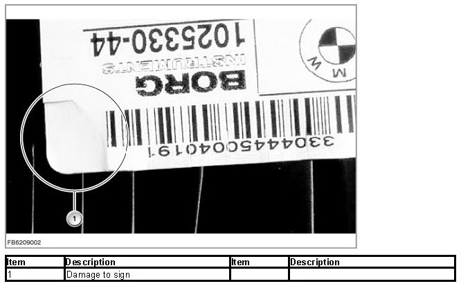

Odometer: Testing and Inspection
Notes Regarding Possible Manipulation Of The Odometer
General information:
Affected vehicles:E60, E61, E63, E64, E81, E82, E87, E88, E90, E91, E92, E93
In these vehicles, the distance travelled is stored in a number of control units, for example in the instrument cluster (KOMBI) among others. The control units synchronize the total distance as soon as terminal R is switched on. The memory module for the kilometer reading is located in the instrument cluster (soldered onto the printed circuit board). The memory module can only be written on once with the BMW diagnosis system (not deletable under any circumstances).
However, some persons have succeeded in manipulating the kilometer reading - not without dismantling the instrument cluster and leaving visible traces. If there is a suspicion of something of this nature, the following tests can be helpful.
IMPORTANT: A true appraisal of any possible manipulation can only be provided by an independent assessor.
Visual inspection while installed
- Check the inclination of the needles as well as position of the zero points of the needles for inaccuracy. The needles have been inserted automatically. The tolerances are very low.

- Check for damage and fingerprints on the dial as well as the inside of the glass cover.
- Check the inside of the glass cover for scratches.
- Check whether the needle grinds against the glass cover, especially the needle for the current fuel consumption.
Check with BMW diagnosis system
- Compare the vehicle identification number in the Car Access System (CAS) and in the instrument cluster (KOMBI).
- Read out the fault code memory entries in all other control units. Check whether the kilometer reading entered there is higher than that in the instrument cluster.
- Run a self-test of the instrument cluster to check whether the needles all move smoothly.
Check when removed
- Check the distance between the needles and the dials. The needles have been inserted automatically. The distance to the dial is always the same.


- Broken and scratched retaining lugs at the rear of the housing of the instrument cluster.

- Check whether the sign is easy to remove, damaged or attached with ripples.

- Vehicles E60, E61, E63, E64:
Torx screws of the screw connection at the back of the housing are missing or heavily worn.
- By looking through the ventilation slot on the rear of the instrument cluster, check whether a printed circuit board or additional electronic modules have been installed.
- Check whether rattling noises can be heard when the instrument cluster is shaken lightly (e.g. loose screws or broken pieces).
No liability can be accepted for printing or other errors. Subject to changes of a technical nature